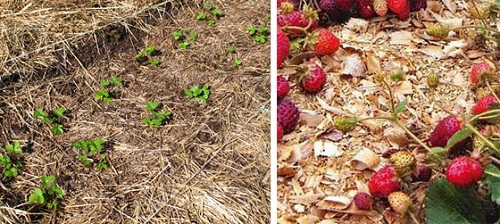

Друзья, мы продолжаем серию материалов о таком простом и эффективном методе успешного земледелия, как мульчирование. Многие используют его, но не знают, что он так называется. Мульчирование - это покрытие почвы различными материалами. Вообще,такой прием агротехники может подойти для всех огородных культур, потому что слой мульчи задерживает в почве влагу, у сорняков нет возможности пробиться на свет, почва становится рыхлой и питательной. Под слоем ульчи будет много дождевых червей, которые также улучшают структуру почвы.
Сегодня мы расскажем о мульчировании клубники с помощью подручных материалов.
Мульчировать почву под клубникой можно разными способами. Самое простое-это купить черную пленку или укрывной материал, но бывает такое, что купить эти материалы нет возможности. В это трудно поверить, но и без них можно прекрасно обойтись. Вы спросите как? Для этого нам будут нужны старые ненужные газеты или картон. Приготовьте грядку для посадки клубники и накройте ее заготовленными газетами или картоном, старайтесь укладывать листы так, чтобы они заходили друг на друга сантиметров на 20. Накрывайте грядку так, чтобы земля полностью была покрыта этими материалами, так как это не даст прорасти сорнякам. Идеально, конечное, покрывать почву под клубникой большими листами картона, так как это даст меньше соединений. Если нет картона, берите газеты. Только слоев газет должно быть не менее 20-30 листов, на этом экономить не стоит.
После того как Вы уложите картон или газеты, на эту землю нужно насыпать питательный слой земли. Если у Вас имеется перегной или перегнивший компост, опилки, они тоже пойдут в дело. Толщина этого слоя должна составлять не менее 5-10 см. Подготовленная грядка для посадки клубники должна постоять минимум одну неделю.
Через неделю приступаем к посадке клубники. Берем садовый совок и протыкаем слой мульчи, делаем отверстие в почве. В это отверстие и сажаем саженец клубники, который поливаем обильно. Мульчу между саженцами поливать не рекомендуется. Это будет единственный полив, так как мульча очень хорошо задерживает влагу, но а если лето будет жарким, то поливать все-таки придется. Теперь, посадив клубнику, приготовьте сухое сено, солому, скошенную траву или опавшие листья. Вот этим материалом еще сверху накройте грядку с саженцами клубники. Это делается в сухую погоду, но если идут дожди, накрывать пока не спешите. Подождите немного, чтобы рассада подросла, иначе ее могут съесть слизни.
|  |
Что можно использовать в качестве мульчирующего материала?
Для мульчирования подойдут сосновые шишки, веточки, кора ну и конечное, хвойные иголки. Этот мульчирующий материал перегнивает намного быстрее, почва становится более рыхлой, в нее поступают много питательных элементов.
Садоводы применяют и еловые иголки, кору и шишки в качестве мульчирующего материала, но он не так распространен. Многие считают, что такой мульчирующий материал угнетает растения. Можно сделать компост, в которую добавить опавшие листья, еловый опад и солому. Вот такую смесь и можно использовать в качестве мульчи.
Мульчирующий материал, приготовленный из сосны, подходит не только для мульчирования клубники. Используете его в качестве мульчи для цветов и других декоративных растений. У этого материала есть один недостаток- частое применение сосновой хвои подкисляет почву. Этого можно избежать, вносите регулярно золу, а раз в два года- доломитовую муку. Многие опытные садоводы применяют комбинированное мульчирование. Делается это таким образом. Насыпаем слой сосновых иголок, а уже на этот слой укладывается негодное сено, солома или опавшие листья.
Как Вы считаете, прочитав данную статью о мульчировании клубники, стоит ли применять данный метод? Даже не сомневайтесь и пробуйте! Вы сможете получить отличный и здоровый урожай клубники!
Error: Undefined variable: category_text File: /var/www/votchina.su/data/www/votchina.ru/templates/template-news.php (65)